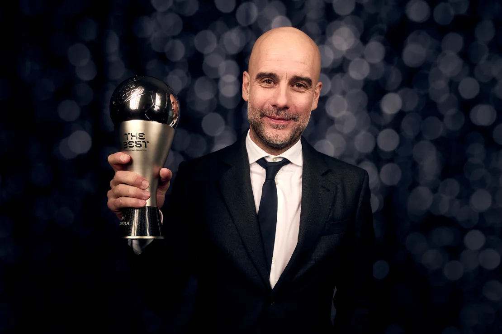
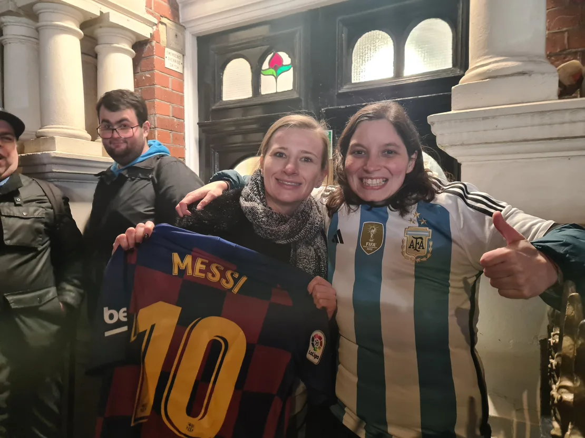

Lionel Messi, Aitana Bonmatí, a green carpet and a mini tuxedo. Step inside the surreal world of FIFA’s Best Awards

(CNN) — Hammersmith’s Apollo Theatre has hosted some of the world’s best bands and comedians, but on a freezing cold January night, the world of soccer flocked to the London venue to celebrate the very best in the sport for the FIFA Best Awards.
The Apollo is situated close to a flyover and next to a roundabout, but that didn’t stop fans braving the cold in west London to catch a glimpse of their heroes.
Many had been lining up opposite the entrance of the green rather than red carpet – presumably because that’s the color of a football pitch – in the bitter cold since 8 a.m. to secure the best vantage point.
“Oi, did you see Pep?” one excited fan asked his friend as Manchester City manager Pep Guardiola stepped onto the green carpet from his tinted taxi. The Spaniard went on to be crowned the Best Men’s Coach after guiding City to the treble last season.
Romina Polenta, 34, from Argentina was one of the hundred or so fans who had gathered on the opposite side of the road to watch proceedings from afar.
Polenta was there to support Lionel Messi, who was one of three stars nominated for the best male player award, alongside Kylian Mbappé and Erling Haaland.“
“He [Messi] should always win,” Polenta told CNN Sport. “I’m a very partial [Messi] fan,” she jokes. “I don’t think he will win, I think Haaland will win, but he [Messi] should.”
Polenta says she was in London when Messi led Argentina to World Cup glory in Qatar in December 2022, adding that she “cried for 45 minutes” after the full-time whistle.
“That was the only reaction I could have,” she says. “It was the best moment of my life. What he did for the country is something unbelievable.
“There are no words to explain what he did for the country. I am assuming you saw the pictures of five million people celebrating on the streets [in Buenos Aires]? That is not normal – for anything in history.”
Polenta was joined by her friend Johanne Perraud, 31, from France, who was naturally hoping to catch a glimpse of “Kiki,” Mbappé.
However, Perraud didn’t want her compatriot to win the Best award: “Well, to support my friend, I think Messi should win.”
The good news for Polenta and her friend is that later that evening Messi was crowned the FIFA Best Men’s Player, though the announcement was greeted by some surprised murmurs in the auditorium.
It’s the second consecutive year that Messi has won the award, winning the previous accolade in the immediate aftermath of Argentina’s World Cup success at Qatar 2022.
While few could argue with last year’s decision, the choice to award Messi the trophy again raised eyebrows, with the 36-year-old stepping away from top-flight football this year by joining Inter Miami in the MLS.
According to the world governing body, “Nominations for the awards were compiled by FIFA in collaboration with football stakeholders. Later, shortlists were determined by two separate panels of experts in men’s and women’s football. These panels comprised respected former players and coaches.”
‘It’s crazy to be close to players in real life’
The somewhat fraught security outside the venue was in contrast to the laid-back atmosphere inside, with stars of the game milling around as they waited for the ceremony to begin.
Players past and present were in attendance, including the likes of Brazilian great Ronaldo and the newly crowned Women’s Best Player, Aitana Bonmatí.
Members of the media and a selection of special guests were confined to the upper echelons of the venue, able only to observe as the superstars engaged in small talk below.
Also flitting around the theater, speaking and smiling at the camera on his phone, was content creator Oussama Nacer – or OussiFooty as he’s known on social media.
Nacer boasts almost five million followers on TikTok and was in London to help produce FIFA’s social media output for the ceremony.
“It’s crazy to be close to players in real life, you always watch them on TV or in a stadium but here, seeing them in real life at an awards ceremony, everyone dressed up nicely, I’ve also dressed up nicely, it’s really cool,” Nacer told CNN Sport, adding that he was slightly starstruck meeting World Cup winner and host Thierry Henry backstage.
“For me, I love it, just to bring people closer to the event because normally they just watch it on TV. But seeing how it actually is, interacting with the players, showing them more content is what I love most.”
The event kicked off with interpretive dancers and epic montages telling the story of the most-talked about moments from 2023, before the awards started being handed out.
The year of 2023 in football is arguably most likely to remembered for Spain’s Jennifer Hermoso receiving an unwanted kiss from the country’s former soccer boss, Luis Rubiales, following the national team’s 2023 Women’s World Cup victory.
The kiss was televised globally as Spain’s players lined up to receive their medals and congratulations from major political and football figures after their victory last August.
Rubiales, then president of the Royal Spanish Football Federation, was seen kissing Hermoso on the lips, then slapping her twice on the back, sparking an immediate outcry in Spain and internationally over consent.
All of which perhaps explains why FIFA dedicated the awards to women’s soccer, with solely women in charge of handing out the trophies on stage.
Sarina Wiegman, winner of the Best Women’s Coach award, used her acceptance speech to encourage more young girls to get into the game, an example followed by many of the winners that followed.
As well as the handing out of the awards, the ceremony contained some genuinely heartwarming moments. Notably, the announcement that Brazil legend Marta would have a new award for the best goal scored in women’s football named after her, mirroring the Puskás Award in the men’s game.
Marta holds the record for most goals scored at a men’s or women’s World Cup with 17 goals and a montage of some of her greatest moments played out on the giant screen behind her.
“It makes me extremely happy to have the record, but it represents Brazil as a nation – not Marta, but all of us,” said the 37-year-old Brazilian. “It’s a huge honor for me to hold this record.
“There’ll be no more World Cups for Marta. I’m very happy about how women’s football has evolved in Brazil and in the world.
“There are girls bursting with talent who have a massive future in front of them. It’s just the start for them, while for me it’s the end of the line.”
Additionally, Hugo Íñiguez, a huge fan of Argentine club Colón, received the FIFA Fan Award after adorable scenes of him bottle feeding his baby son on the terraces went viral last year.
Íñiguez’s young son, dressed in a cute mini tuxedo, burst into tears as soon as his father got to the microphone, drawing laughs and aww’s from the crowd.
After Íñiguez handed his son to his partner in the crowd, he went on to thank the cameraman, Salta Rodríguez, who captured the special moment.